14직원 & 권한
이 기능으로 함께 일하는 사람들을 추가합니다. 각자 할 수 있는 일을 지정하고, 근무 시간을 기록할 수 있습니다. (Pro 또는 Business 플랜이 필요합니다.)
Settings › Add-ons › Staff에서 켭니다(Pro 애드온; 사장님만 켤 수 있습니다).
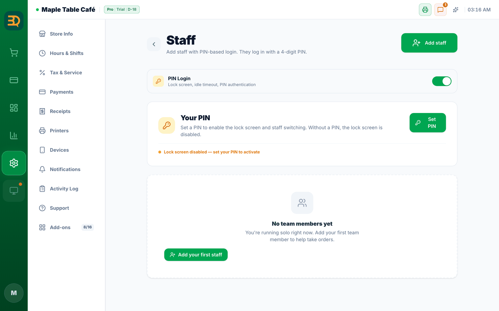
- Settings로 이동해 직원 페이지를 찾습니다.
- Add staff를 탭합니다. 사람 이름을 입력합니다.
- 역할을 지정합니다. 역할이 앱에서 할 수 있는 일과 없는 일을 정합니다.
- 아무도 사용하지 않을 때 계산대가 자동으로 잠기게 하려면 자리 비움 잠금(Idle Lock)을 켭니다. (예전 이름은 "PIN Login"이었습니다.)
- 근무 기록(time clock)을 켜면 직원이 탭해서 출퇴근을 기록합니다. 근무 시간이 리포트에 반영됩니다.
- 직원 이름을 주문에 언제든 — 판매가 끝난 후에도 — 넣을 수 있습니다. (미용실에 편리합니다.)
Staff 애드온 켬·끔 차이
직원 기능은 두 가지 조건을 모두 충족해야 완전히 켜집니다: ① 플랜이 Pro 또는 Business일 것, ② Settings › Add-ons의 Staff 토글이 켜짐일 것. 둘 중 하나라도 충족하지 못하면 아래와 같이 일부 기능이 잠깁니다.
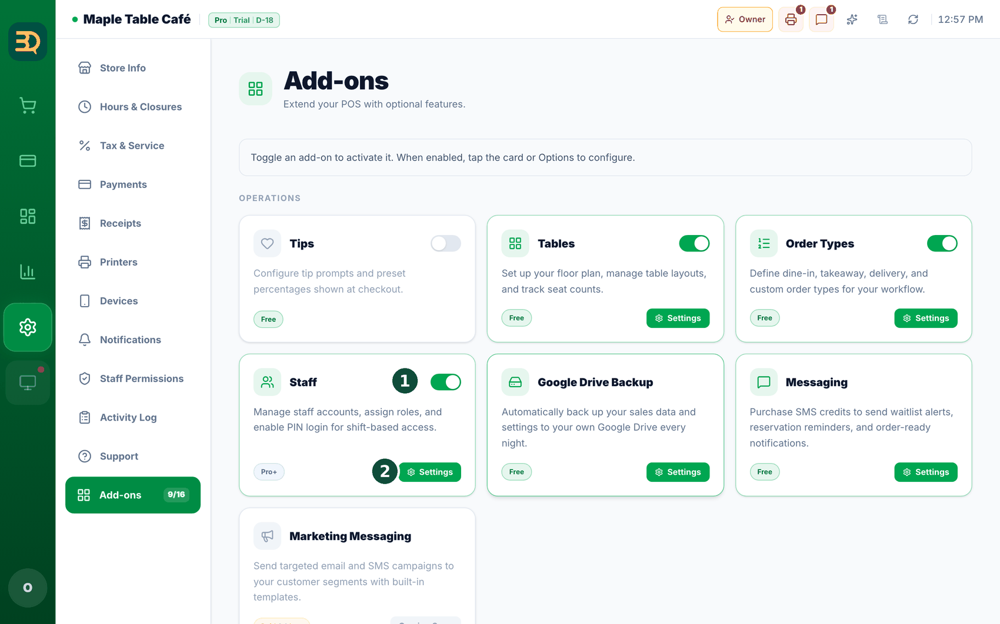
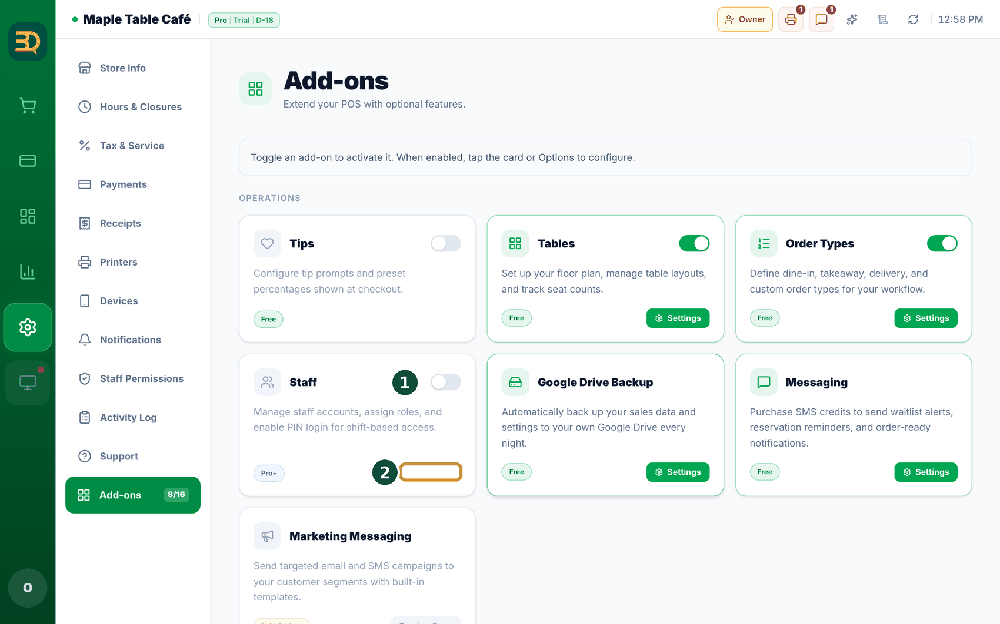
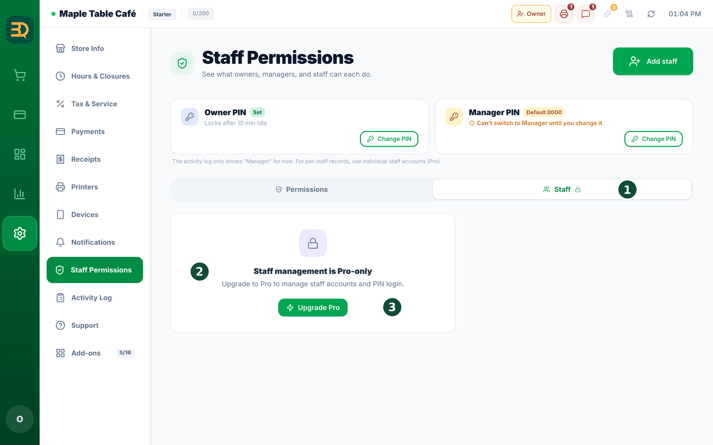
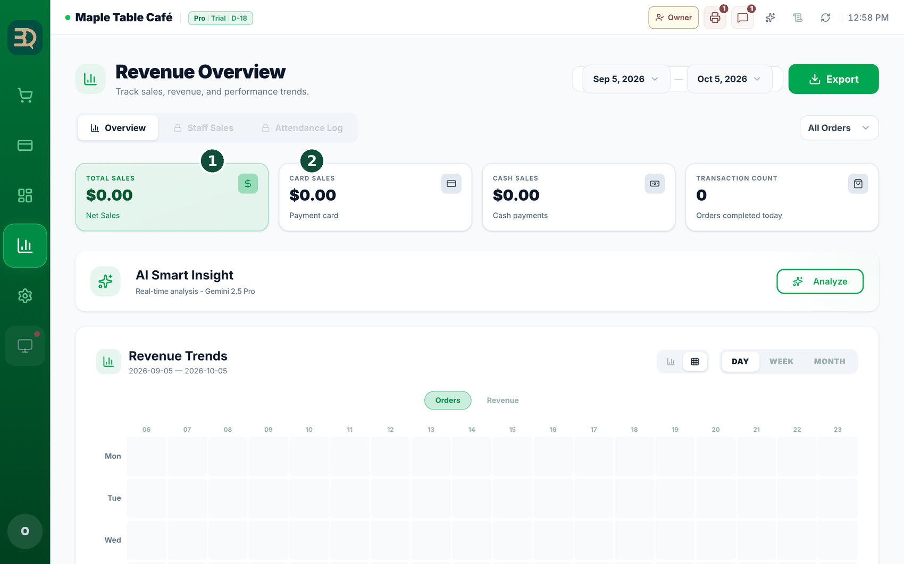
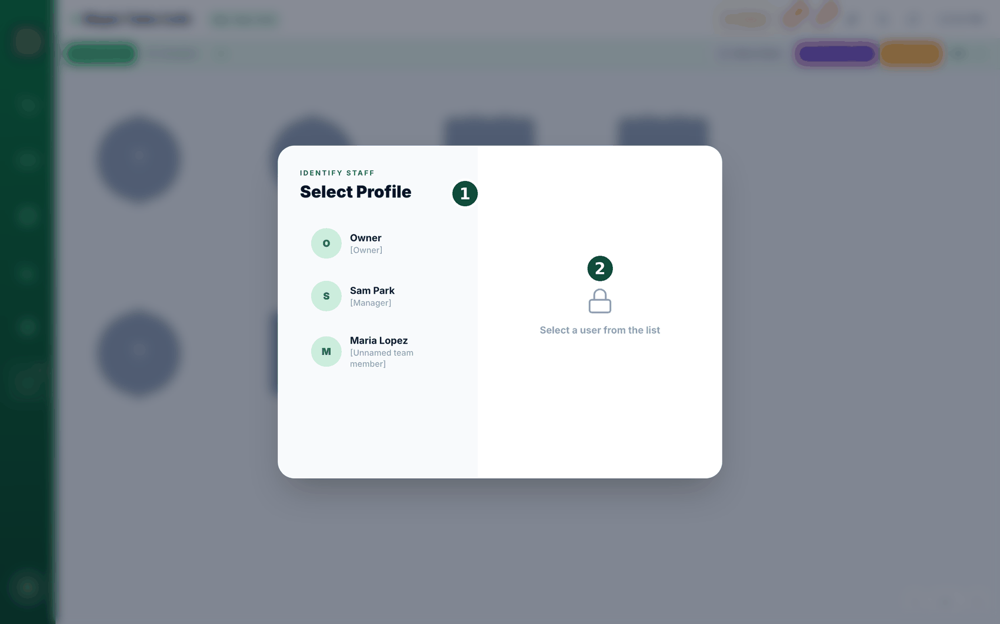
- 켬: 통계(Stats)의 Staff Sales·Attendance Log 탭이 열립니다(통계 화면은 Revenue Overview로 시작합니다). 결제 내역에 All Staff 필터가 생기고, 마감(Close Day) 창에 직원 칩이 표시됩니다. 자리 비움 잠금도 함께 켜 두면 계산대에 Select Profile 잠금 화면이 표시되어 직원이 자기 프로필로 전환합니다.
- 끔: 위 탭들은 자물쇠로 잠기고, All Staff 필터·마감 직원 칩·잠금 화면은 나타나지 않습니다. 직원 목록(
Settings › Staff Permissions › Staff)에서 사람을 추가하고 확인하는 것은 Pro 플랜이면 토글과 상관없이 가능합니다. - Starter 플랜: Add-ons 카드에 토글 대신 Upgrade 버튼이 표시됩니다. Staff 서브탭에는 자물쇠와 "Staff management is Pro-only", 그리고 Upgrade Pro 버튼만 표시됩니다.
직원 추가하기
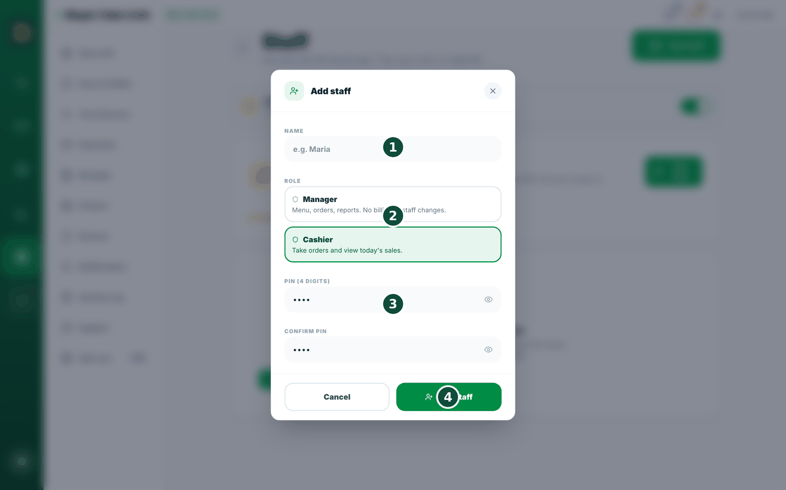
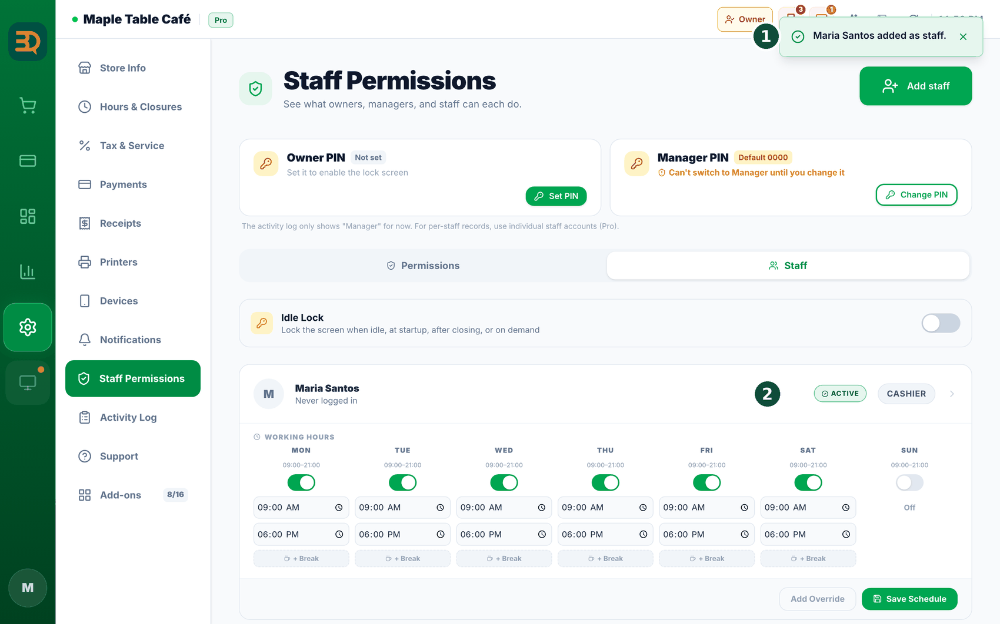
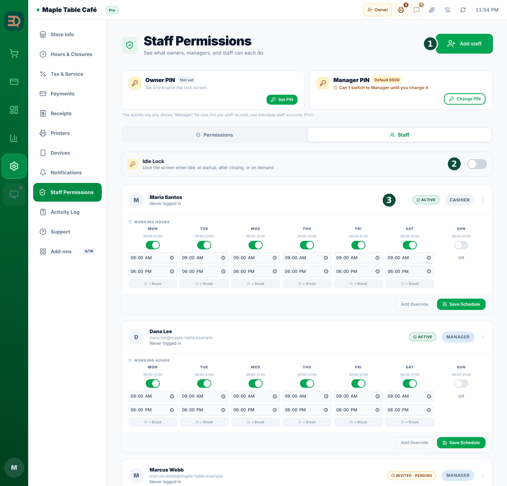
- Add staff를 탭합니다. 양식이 열립니다.
- 사람의 이름(Name)을 입력합니다.
- 역할(Role)을 선택합니다 — Manager(메뉴, 주문, 리포트 — 결제나 직원 변경은 불가) 또는 Cashier(주문 받기, 오늘 매출 보기).
- 4자리 PIN을 정하고 확인합니다.
- Add staff를 탭합니다. 이제 직원 목록에 표시되며 자기 PIN으로 로그인할 수 있습니다.
직원 정보 수정·삭제
이름 고치기, PIN 바꾸기, 그만둔 사람 숨기기 — 예전에는 같은 줄에 조작 방법이 넷으로 흩어져 있었습니다. 이제 진입 방법은 하나입니다: 그 사람을 탭해 주세요.
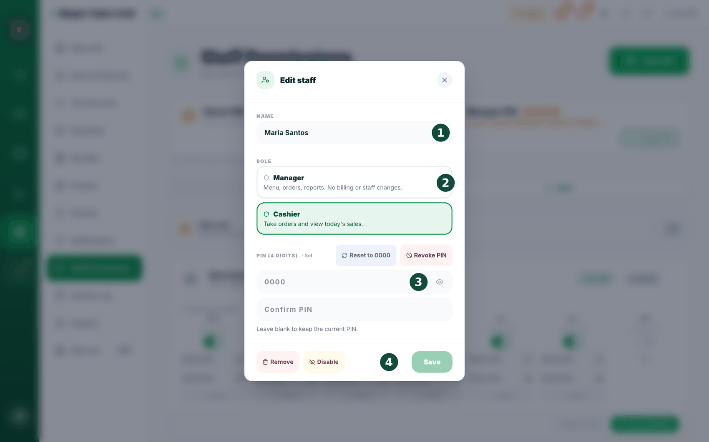
- 직원 목록에서 직원 이름(그 사람 줄 아무 곳이나)을 탭하면 수정 창이 열립니다.
- 맨 위에 이메일이 크게 표시됩니다 — 사람을 혼동하지 않도록 하기 위해서입니다. 필요하면 이름(Name)을 고칩니다.
- 맡은 일이 바뀌었다면 역할(Role)을 변경합니다. (사장님 본인 줄은 역할이 글자로만 표시되며 — 여기서는 변경할 수 없습니다.)
- PIN을 새로 정하려면 PIN (4자리) 칸 두 곳에 모두 입력합니다. 두 칸을 모두 비워 두면 현재 PIN이 그대로 유지됩니다 — 칸 아래에 "비워 두면 기존 PIN 이 그대로 유지됩니다."라고 항상 표시됩니다.
- Save를 탭하면 완료됩니다.
참고: 사람을 삭제하는 것과 가게를 넘기는 것은 다른 일입니다. 매장을 양도하려면 소유권 이전을 따로 문의해 주세요.
권한 · 매니저 PIN · 직책 칩
매니저와 직원이 어느 화면에서 무엇을 할 수 있는지 화면 단위로 정리한 설정 페이지입니다. 이제 체크를 켜고 끄고 저장할 수 있습니다. 화면도 새로 만들었습니다 — 위쪽에는 PIN 카드 두 장이 가로로 나란히 있고, 그 아래에 큰 표가 있습니다.
설정(Settings) › 직원 권한(Staff Permissions). 매니저도 열어서 볼 수 있지만, 변경하고 저장하는 것은 사장님만 할 수 있습니다. 위에 탭이 두 개 있습니다 — Permissions(권한, 모든 플랜) · Staff(직원 관리, Pro 기능 — "Staff management is Pro-only").
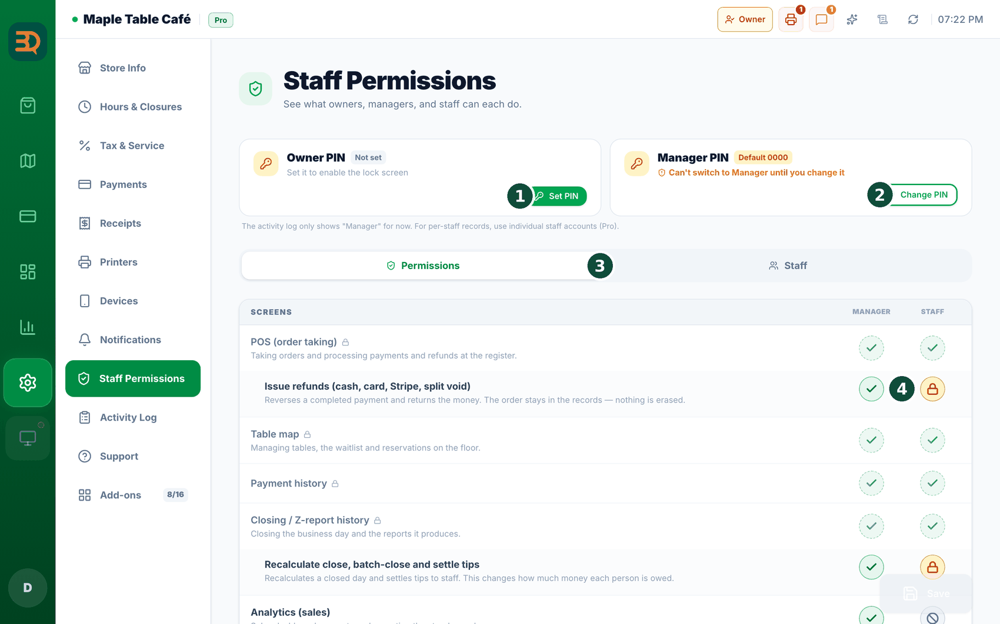
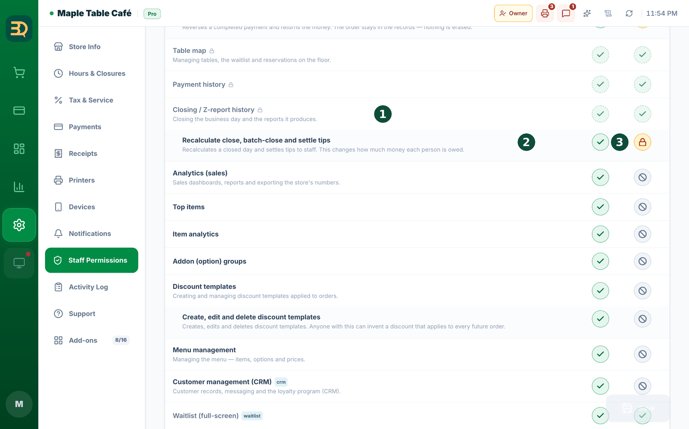
- 표에는 칸이 딱 두 개 — "Manager"(매니저)와 "Staff"(직원)입니다. 사장님 칸은 없습니다. 사장님은 언제나 모든 권한을 갖기 때문입니다.
- 표는 처음부터 모두 펼쳐져 있어 접거나 펼칠 필요가 없습니다. 권한은 화면별로 묶여 있고(Screens · Settings tabs · Available everywhere), 화면 줄 아래에 세부 권한 줄이 이어집니다. 세부 권한이 없는 화면은 줄 하나로 끝납니다.
- 해당 직책의 체크를 켜거나 끕니다. 화면 줄의 체크는 그 화면을 열 수 있는지를, 그 아래 줄의 체크는 세부 작업을 정합니다. 기본값과 다르게 바꾼 줄에는 되돌리기 표시가 나타납니다.
- 줄 옆의 색 알약을 눈여겨봐 주세요: PIN approval(PIN 승인 — 매니저가 PIN을 먼저 입력해야 함) · Limited view(일부만 표시) · Restricted(차단) · Open the page(그 화면이 아예 보이는지 여부를 정하는 줄).
- 자물쇠가 붙은 줄은 사장님이라도 바꿀 수 없는 줄입니다(사장님 전용 또는 고정 항목). 이 표에는 검색창이나 '차이만 보기' 스위치가 없으니, 표를 위에서 아래로 훑어 주세요.
- 모두 선택했다면 설정 화면 위쪽의 저장을 눌러 주세요. 아직 저장되지 않은 줄이 몇 개인지 표시되며, Discard changes(변경 취소)를 누르면 되돌아갑니다.
설정 › 직원 권한 › Staff)을 끄면 계산대가 자동으로 잠기는 기능만 중단됩니다. 그 외에는 아무것도 바뀌지 않습니다 — 직원은 여전히 자기 PIN으로 로그인하고, 직책 칩도 전환되며, 활동 기록에 누가 했는지 남고, 이 페이지의 권한도 모두 그대로 적용됩니다. (사람을 구분하지 않게 만드는 스위치는 Staff 애드온을 끄는 것입니다.)PIN 카드 — 페이지 위쪽에 나란히 있습니다
사장님 PIN과 매니저 PIN 카드가 이 페이지 상단에 가로 2열로 나란히 배치되어 있습니다. 카드마다 상태가 한눈에 표시됩니다 — Set(설정됨) · "Default 0000"(기본값 0000) · Not set(미설정). 사장님 카드 아래에는 설정되어 있으면 "10분 동안 안 쓰면 잠겨요"(Locks after 10 min idle), 아직 설정 전이면 "설정하면 잠금 화면을 쓸 수 있어요"라고 표시됩니다. 매니저 PIN이 있으면 그날 근무하는 사람이 계정을 따로 만들지 않고도 매니저 업무를 할 수 있습니다. 설정·변경은 사장님만 할 수 있습니다. 매니저가 이 페이지를 열면 자물쇠 표시와 함께 "Only the owner can change this card."(이 카드는 대표만 바꿀 수 있습니다)라고 표시됩니다.
직책 칩 — 지금 이 포스가 누구인지 바꾸기
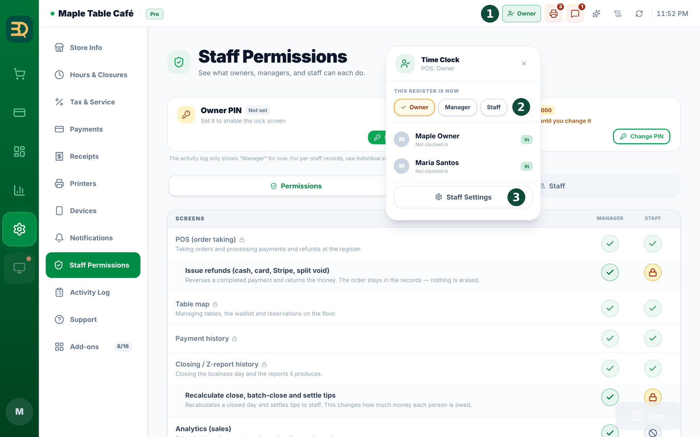
- 화면 위쪽에 색깔 칩이 있습니다 — 이 포스가 현재 어떤 직책으로 동작하는지 알려 줍니다: 사장님(주황) · 매니저(파랑) · 직원(회색).
- 칩을 탭하면 직책 3줄이 있는 작은 패널이 열립니다.
- 내려가기(예: 사장님 → 직원, 계산대를 직원에게 맡길 때)는 탭 한 번이면 됩니다. PIN을 요청하지 않습니다 — 권한을 내려놓는 일이기 때문입니다.
- 올라가기는 해당 직책의 PIN을 요청합니다("매니저 PIN을 입력해 주세요"). 이 기기가 갈 수 없는 줄은 누르기 전부터 잠겨 보이므로, 눌러도 되지 않는 막다른 길로 가지 않습니다.
PIN을 잊었을 때
PIN이 기억나지 않는다고 지원팀에 전화하실 필요는 없습니다. PIN마다 복구 방법이 따로 있습니다.
사장님 PIN — 이메일로 오는 코드
화면 위쪽의 직책 칩을 탭하면 열리는 패널(직책을 바꿀 때 쓰는 그 패널)의 사장님 줄에 "PIN을 잊으셨나요?"(Forgot your PIN?)가 있습니다. 이 기기에 사장님으로 로그인되어 있어야 합니다.
- "PIN을 잊으셨나요?"를 탭합니다. 가입 이메일로 6자리 코드를 보내 드립니다 — "가입 이메일로 6자리 코드를 보냈습니다. 아래에 코드와 새 PIN을 입력해 주세요."
- 이메일 인증 코드를 입력하고, 새 PIN(4자리)을 넣고 한 번 더 확인합니다.
- "새 PIN 설정"을 탭하면 완료됩니다 — "오너 PIN이 재설정됐습니다. 다음부터 새 PIN을 사용해 주세요."
매니저 PIN — 사장님이 새로 정하면 됩니다
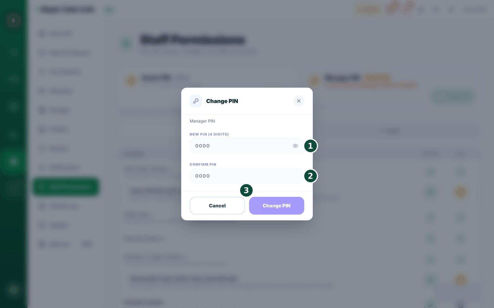
설정 › 직원 권한을 열고 위쪽의 매니저 PIN 카드를 찾습니다.- Change PIN(PIN 변경 — 아직 없으면 Set PIN)을 누르고 새 코드를 입력합니다. 사장님만 할 수 있습니다.
- 카운터에 새 코드를 알려 주세요.
설정 › 직원 권한 › Staff에서 그 직원을 열면 "Reset to 0000"(0000으로 초기화)이 그대로 있으며, 사장님과 매니저 모두 사용할 수 있습니다. 초기화한 뒤에는 본인이 바로 새 PIN을 정하도록 안내해 주세요.